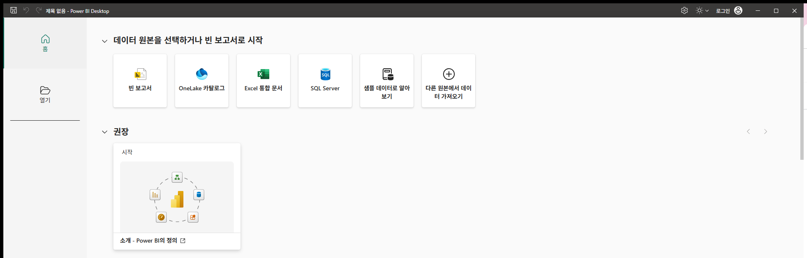
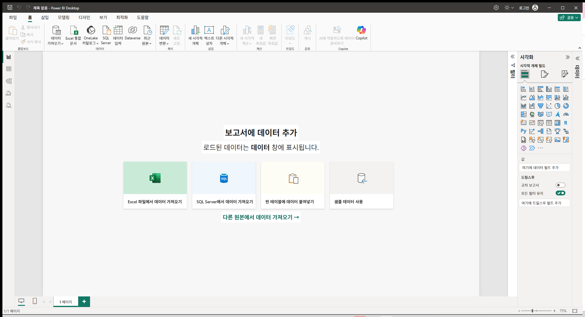
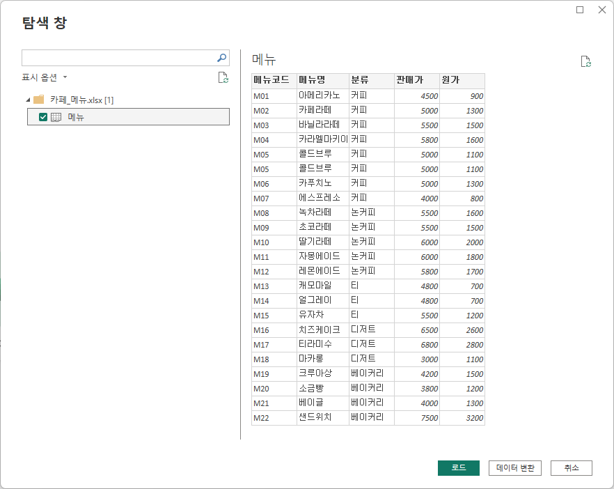
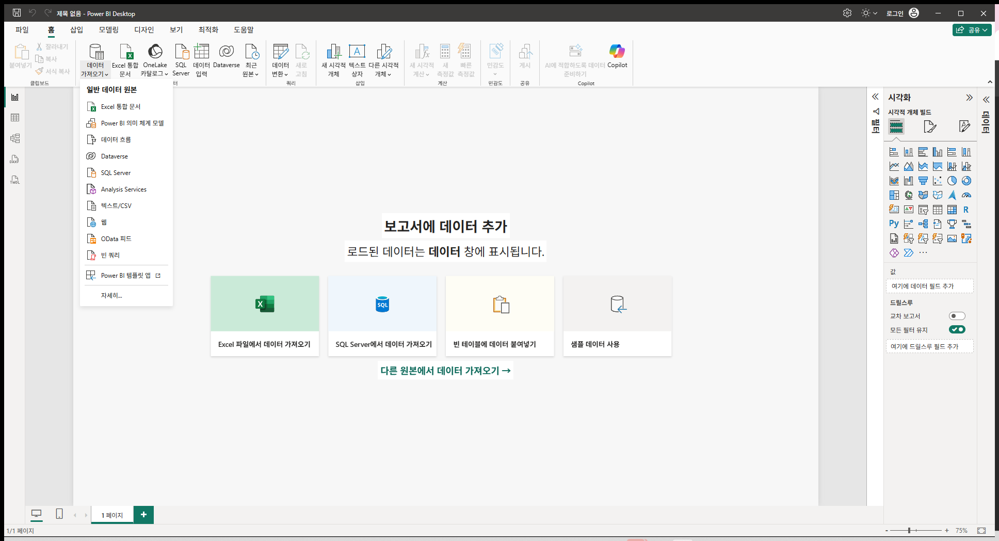
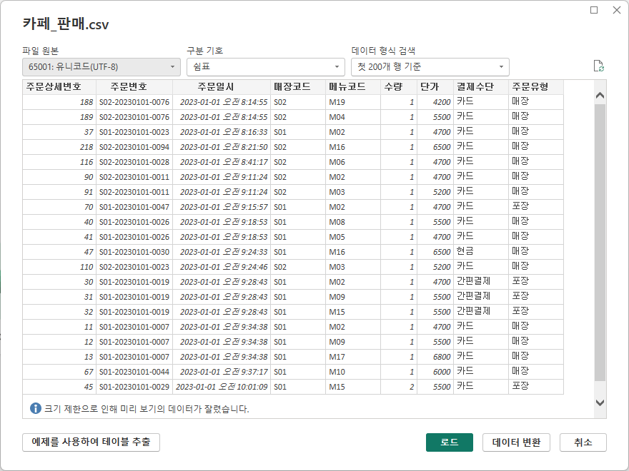
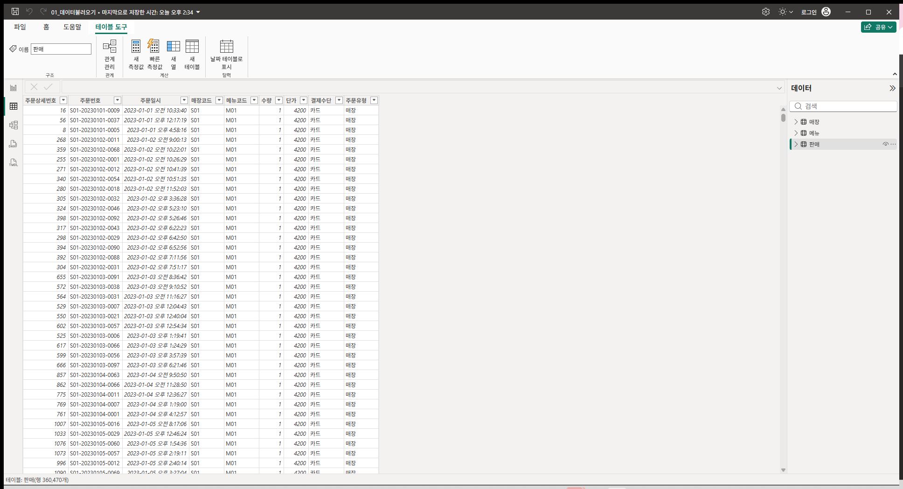
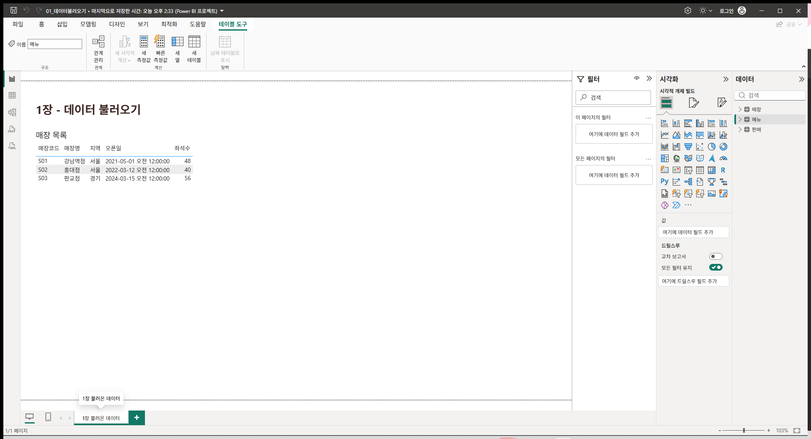

1장. Power BI 시작하기 - 화면과 데이터 불러오기
학습 목표
- Power BI Desktop 화면의 각 부분(리본, 보기 단추, 캔버스, 오른쪽 창)의 이름과 역할을 안다.
- 엑셀 파일과 CSV 파일을 불러온다.
- 테이블 보기에서 불러온 데이터를 확인한다.
- 첫 번째 시각적 개체(표)를 만들고 파일을 저장한다.
1-1. Power BI 는 무엇인가
Power BI 는 흩어진 데이터를 모아 정리하고, 차트로 된 보고서를 만드는 Microsoft 의 도구다. 엑셀로도 표와 차트를 만들 수 있지만, Power BI 는
- 수십만~수백만 줄의 데이터를 빠르게 다루고,
- 여러 파일을 관계로 이어 한 번에 분석하고,
- 클릭 한 번으로 모든 차트가 함께 바뀌는 대화형 보고서를 만든다.
| 이름 | 하는 일 | 이 과정에서 |
|---|---|---|
| Power BI Desktop | 내 PC 에서 보고서를 만드는 프로그램 (무료) | 모든 장 |
| Power BI 서비스 | 만든 보고서를 웹에 올려 공유 (회사 계정 필요) | 7장에서 소개만 |
| Power BI 모바일 | 휴대폰으로 보고서 보기 | 다루지 않음 |
1-2. 화면 둘러보기
Power BI Desktop 을 실행하면 시작 화면이 나온다.

빈 보고서 를 누르면 작업 화면이 열린다. (Excel 통합 문서 단추로 바로 엑셀을 불러올 수도 있다)

| 부분 | 위치 | 하는 일 |
|---|---|---|
| 리본 | 위쪽 | 홈·삽입·모델링·보기 탭의 단추들. 데이터 가져오기, 새 측정값 등 |
| 보기 단추 | 왼쪽 세로 막대 | 위에서부터 보고서 보기(차트 만들기) · 테이블 보기(데이터 확인) · 모델 보기(관계) · DAX 쿼리 보기 · TMDL 보기 |
| 캔버스 | 가운데 | 차트를 올려놓는 도화지. 아래쪽에 페이지 탭 |
| 필터 창 | 오른쪽 | 이 페이지·모든 페이지에 거는 조건 |
| 시각화 창 | 오른쪽 | 차트 종류 고르기, 필드 넣기, 서식 바꾸기 |
| 데이터 창 | 맨 오른쪽 | 불러온 테이블과 열 목록 |
오른쪽 창이 접혀서 안 보이면 창 위쪽의 « 단추를 누르거나, 리본 보기 탭에서 필터·시각화·데이터 창을 켠다.
1-3. 엑셀 파일 불러오기 - 메뉴와 매장
- 리본 홈 → Excel 통합 문서 를 누른다.
C:\study\power-bi-tutorial\data\카페_메뉴.xlsx를 고르고 열기.- 탐색 창이 열린다. 왼쪽 목록에서 시트 메뉴 의 체크 상자를 켜면 오른쪽에 미리 보기가 나온다.

- 아래쪽 로드 를 누른다. (데이터 변환 은 2장에서 쓴다)
- 같은 방법으로
카페_매장.xlsx의 매장 시트도 불러온다.
오른쪽 데이터 창에 메뉴, 매장 테이블이 생겼다.
1-4. CSV 파일 불러오기 - 판매
CSV 는 값을 쉼표(,)로 나눈 글자 파일이다. 프로그램끼리 데이터를 주고받을 때 가장 많이 쓴다.
- 리본 홈 → 데이터 가져오기 의 아래쪽 ▾ 를 누르면 자주 쓰는 원본 목록이 나온다.

- 텍스트/CSV →
카페_판매.csv→ 열기. - 미리 보기 창이 열린다. 세 가지를 확인한다.

| 항목 | 확인할 값 | 틀리면 |
|---|---|---|
| 파일 원본 | 65001: 유니코드(UTF-8) |
한글이 카페 처럼 깨진다 → 목록에서 UTF-8 로 바꾼다 |
| 구분 기호 | 쉼표 |
모든 값이 한 열에 붙어 나온다 |
| 데이터 형식 검색 | 첫 200개 행 기준 |
그대로 둔다 |
- 로드 를 누른다. 36만 줄이라 몇 초~수십 초 걸린다.
불러오기 = 복사하기 Power BI 는 파일의 내용을
.pbix안으로 복사해 온다(가져오기 모드). 그래서 원본 CSV 를 고쳐도 보고서는 바로 바뀌지 않고, 리본 홈 → 새로 고침 을 눌러야 다시 읽어 온다.
1-5. 테이블 보기로 데이터 확인하기
왼쪽 보기 단추에서 두 번째 테이블 보기(표 모양 아이콘)를 누르고, 오른쪽 데이터 창에서 판매 를 고른다.

- 아래쪽 상태 표시줄에 행 수가 나온다. 판매는 360,470개 행이다.
- 열 이름 옆의 아이콘이 데이터 형식이다. Power BI 가 처음 200줄을 보고 짐작한 것이다. (
123정수,ABC텍스트, 달력 모양 날짜/시간) - 테이블 보기에서는 데이터를 보기만 한다. 값을 고치는 것은 2장의 Power Query 에서 한다.
잠깐, 이상한 점이 보이나요? 열 머리글의 ▾ 를 눌러 결제수단 값을 펼쳐 보면
카드,신용카드,CARD가 섞여 있다. 수량에는 빈 값도 있다. 2장에서 정리한다.
1-6. 첫 번째 시각적 개체 - 매장 목록 표
Power BI 에서는 차트·표·카드처럼 캔버스에 올리는 것을 모두 시각적 개체(visual)라고 부른다.
- 왼쪽 맨 위 보고서 보기 로 돌아온다.
- 시각화 창에서 테이블 아이콘(격자 모양)을 누른다. 캔버스에 빈 상자가 생긴다.
- 데이터 창에서 매장 을 펼치고 매장코드·매장명·지역·오픈일·좌석수의 체크 상자를 차례로 켠다.
- 상자의 모서리를 끌어 크기를 알맞게 키운다.
- 리본 삽입 → 텍스트 상자 로 제목
1장 - 데이터 불러오기를 적는다.

시각적 개체가 선택된 상태에서 시각화 창의 다른 아이콘을 누르면 새로 만들어지지 않고 그 개체의 종류가 바뀐다. 새로 만들려면 캔버스의 빈 곳을 한 번 눌러 선택을 푼 다음 아이콘을 누른다.
1-7. 저장하기
리본 위쪽의 디스켓 아이콘(또는 Ctrl+S)을 누르고, C:\study\power-bi-tutorial 에 내카페.pbix 로 저장한다. 2장부터는 이 파일을 열어 이어서 작업한다.
.pbix 한 파일에 모두 들어 있다. 불러온 데이터, 정리 단계, 관계, 측정값, 보고서 화면이 모두 이 한 파일에 저장된다. 그래서 파일이 수 MB 가 된다.
정리
- Power BI Desktop = 데이터 불러오기 → 정리 → 모델 → 보고서를 한 프로그램에서 하는 무료 도구.
- 보고서 보기(차트) · 테이블 보기(데이터 확인) · 모델 보기(관계) 를 오가며 작업한다.
- 엑셀은 홈 → Excel 통합 문서, CSV 는 홈 → 데이터 가져오기 → 텍스트/CSV. CSV 는 파일 원본(UTF-8) 을 꼭 확인한다.
- 불러온 데이터는 .pbix 안에 복사된다. 원본이 바뀌면 새로 고침.
확인 문제
- 테이블 보기에서 메뉴 테이블은 몇 개 행인가? 메뉴는 22개인데 왜 그 숫자가 나오는지 메뉴코드 열을 보고 설명하시오.
- CSV 미리 보기에서 파일 원본을
949: 한국어로 바꾸면 어떻게 되는지 확인하고, 그 이유를 짐작해 보시오. - 1-6 의 표에 매장 의 좌석수 합계가 맨 아래 줄에 나온다. 좌석수 합계는 얼마인가?
- 데이터 창에서 판매 를 펼쳤을 때 수량 옆에 Σ(시그마) 기호가 붙어 있다. 이 기호는 무슨 뜻일지 짐작해 보시오.